DISCOGRAFIA [ Principal ] [ Rock progresivo ] [ HISTORIA ] [ DISCOGRAFIA ] [ DISCOGRAFIA de FRIPP ] [ DVD's ] [ FOTOS ] [ Letras traducidas ] [ Notas de Fripp ]
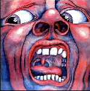
1969 - In the court of the Crimson King
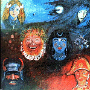
1970 - In the wake of Poseidon
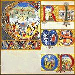
1970 - Lizard
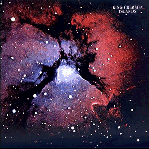
1971 - Islands
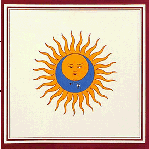
1973 - Larks' tongues in aspic
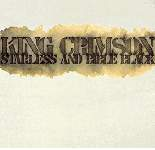
1974 - Starless and bible black
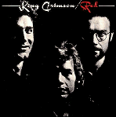
1974 - Red
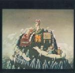
A young person's guide to King Crimson (doble cd recopilación 1969-1974)
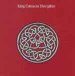
1981 - Discipline
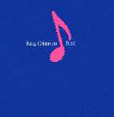
1982 - Beat
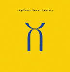
1984 - Three of a perfect pair
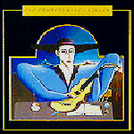
1986 - The compact King Crimson (recopilación con mayoría de temas de In the court... y Discipline)
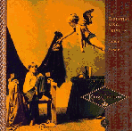
1991 - Frame by Frame (caja de 4 cd recopilación; 3 en estudio y uno en vivo)
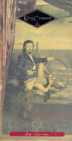
1992 - The great deceiver (caja de 4 cd recopilación de temas en vivo 1973-1974)
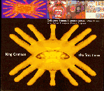
1993 - The first three (triple cd con los tres primeros: In the court..., In the wake... y Lizard)
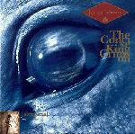
1993 - Sleepless - The concise King Crimson
(recopilación 1969-1984)
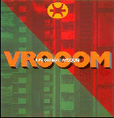
1994 - Vrooom (cd presentación del nuevo KC; nuevas versiones de la mayoría de sus temas fueron incluídas en Thrak)
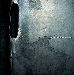
1995 - Thrak
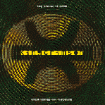
1995 - B'boom (doble cd en vivo con recitales de 1994 en Argentina)
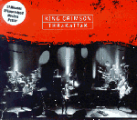
1996 - Thrakattak (improvisaciones en vivo de gira por Japón y USA 1995)
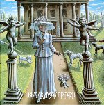
1997 - Epitaph (doble cd con temas en vivo de 1969)
1997 - The night watch (doble cd con temas en vivo de 1973 en Amsterdam)
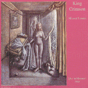
1998 - Absent lovers (doble cd con temas en vivo de 1984 en Montreal)
1998 - Space groove
(doble cd en estudio de ProjeKct 2)
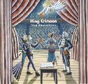
1999 - The ProjeKcts (caja de 4 cd en vivo de los grupos ProjeKct 1, 2, 3, y 4, de los integrantes de KC)
1999 - Deception of the thrush (CD con lo mejor de The ProjeKcts en vivo)
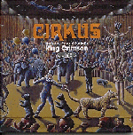
1999 - Cirkus (doble cd con temas en vivo 1969-1998)
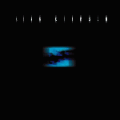
2000 - The construKction of light
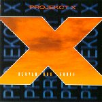
2000 - Heaven and Earth (firmado como ProjeKct X por el cuarteto de "The construKction of light"; grabaciones durante ensayos)
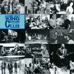
2000 - The beginners guide to the King Crimson Collectors Club (recopilación de temas en vivo de distintas formaciones)
2000 - Heavy construKction (triple CD en vivo)
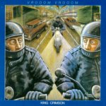
2001 - Vrooom vrooom (doble CD en vivo de México en 1996 y New York en 1995)
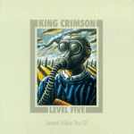
2001 - Level five (en vivo)
2002 - Ladies of the road (doble CD en vivo durante 1971-1972)
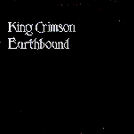
2002 - Earthbound (en vivo en 1972)
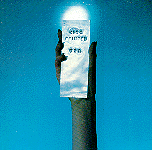
2002 - USA (en vivo en 1974)
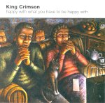
2002 - Happy with what you to be happy (mini album precedente de "The power to believe")
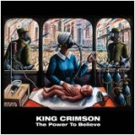
2003 - The Power To Believe
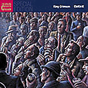
2003 - EleKtrik (en vivo en 2003)
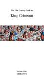
2004 - The 21st Century guide to King Crimson, volume I: 1969-1974 (4 cd)
2004 - The 21st Century guide to King Crimson, volume II: 1981-2003 (4 cd)
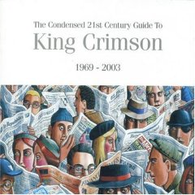
2006 - The condensed 21st Century guide to King Crimson 1969-2003 (2 cd)
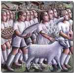
2011 - A scarcity of miracles - A King Crimson ProjeKct (Fripp, Mel Collins y Jakko Jaksyzk)
2015 - Live at The Orpheum (en vivo 2014)
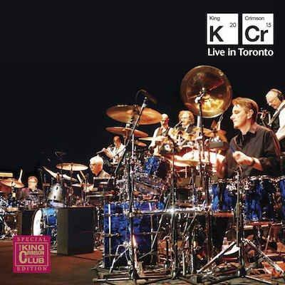
2016 - Live in Toronto (en vivo 2015)
2016 - Radical action
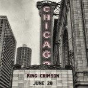
2017 - Live in Chicago (en vivo 2017)
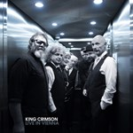
2018 - Live in Vienna (en vivo 2016)
2018 - Meltdown - Live in Mexico 2017
2021 - Music is our friend
Compendio de CD's recopilaciones y en vivo - Portadas
 DISCOGRAFIA
DISCOGRAFIA